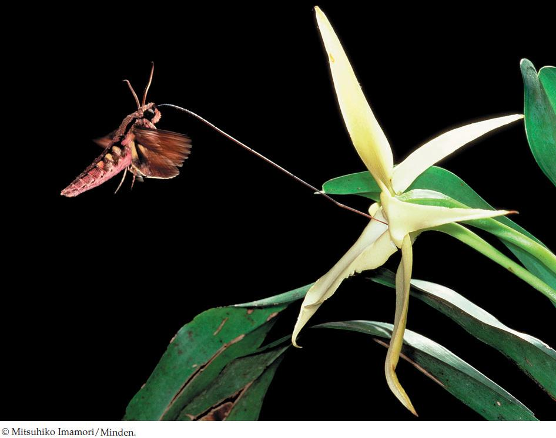

| 21 | The Evolution of Plants |
|
KEY CONCEPTS
21.1 Primary Endosymbiosis Produced the First Photosynthetic Eukaryotes 21.2 Key Adaptations Permitted Plants to Colonize Land 21.3 Vascular Tissues Led to Rapid Diversification of Land Plants 21.4 Seeds Protect Plant Embryos 21.5 Flowers and Fruits ncrease the Reproductive Success of Angiosperms |

On examining a specimen of the orchid Angraecum sesquipedale, Charles Darwin predicted the existence of a pollinator with an exceptionally long proboscis. This pollinator, the sphinx moth Xanthopan morgani, was not discovered until after Darwin’s death.
|
In the early 1860s, while the United States was entangled in its tragic civil war, much of middle- and upper-class England was caught up in an orchid frenzy. Amateur plant breeders and professional botanists alike were enchanted with raising the beautiful flowers. After On the Origin of Species appeared in 1859, Charles Darwin wrote his next book on this group of plants, publishing Fertilisation of Orchids in 1862.
There are more than 25,000 species of orchids, which makes them one of the most diverse plant groups. Darwin wanted to know why orchids had experienced such rapid diversification and was particularly impressed with the role that insect pollinators might have played in this process. He wanted examples to demonstrate the power of natural selection; he found such examples in abundance among the orchids.
Orchids show an impressive variety of specialized pollination mechanisms, many of which demonstrate that they have coevolved with their pollinators. For example, Darwin observed a South American orchid of the genus Catasetum shooting a packet of pollen at an insect that landed on its flower. When he was shown Angraecum sesquipedale, an orchid from Madagascar with a nectar tube over a foot long, Darwin hypothesized that there must be a moth with a proboscis of unprecedented length that fed from and pollinated that flower. Many people scoffed at his vision, but the moth he described was eventually discovered—21 years after his death.
In 1836 the explorer Robert Schomburgk shook the botanical world with a report that he had seen flowers described as belonging to three different genera of orchids—Catasetum, Monachanthus, and Myanthus—growing together on a single plant. The English botanist John Lindley remarked that this observation would “shake to the foundation all our ideas of the stability of genera and species.” Orchid enthusiasts were befuddled by their efforts to grow specimens of Myanthus, only to have them flower with the more common blooms of Catasetum. Darwin knew that he needed to find the explanation for these odd observations, for otherwise he would have to conclude that individual plants were able to change their specific identity, something that did not fit with his explanations of the evolution of diversity.
What was Darwin’s explanation for the three distinct flowers growing on a single orchid plant?